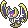
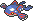
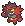
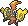
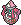
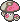

2019年3月25日
【wcs2019ムーン・シリーズ】追い風トリル両採用ルナオーガ
    
概要
簡単に説明すると、「ルナアーラとかがS操作してマウントをとり、眼鏡カイオーガが隣の攻撃と合わせつつ相手を壊滅させていく」という構築です。個別解説
| ルナアーラ | ファントムガード | ルナアーラZ | |
| 241(228)-108(x)-119(x)-207(252)-127(x)-117(x) | |||
| シャドーレイ | サイコショック | おいかぜ | トリックルーム |
| H:これ以上振ると総合耐久指数が減るので残りはBDに | |||
| B:BDどっちに振ってもいいが何となくBに振った | |||
ファントムガードを維持するための守るが欲しいが、技スぺがない。あと4つぐらいスペースが欲しい。
| カイオーガ | あめふらし | こだわりメガネ | |
| 207(252)-108(x)-110(x)-222(252)-160(x)-111(4) | |||
| しおふき | こんげんのはどう | ねっとう | かみなり |
| C:雨眼鏡潮吹きでカイオーガ等半減でもだいたい6,7割削る | |||
| D:相手の控え目カイオーガの1.5倍雷確定耐え | |||
| S:1↓で99族抜き | |||
冷凍ビームは必要無し。
| ガオガエン | いかく | とつげきチョッキ | |
| 207(244)-135(x)-133(180)-100(x)-133(84)-58(x) | |||
| ねこだまし | フレアドライブ | はたきおとす | とんぼがえり |
| B:威嚇込みで意地グラードンの断崖耐え | |||
| D:控え目カイオーガの雨根源耐え | |||
| S:最遅(後攻とんぼ返りとトリル下で動かすため) | |||
この構築では削りや木の実を叩き落とす方が重要なのでバークアウトではなくはたきおとす。この努力値配分は見直す必要アリ。慎重グラードンが多いのでBは下げてもよい、相手のガオガエンの上から猫だましをしたいのでSを上げるなど。
| カプ・コケコ | エレキメイカー | きあいのタスキ | |
| 145(x)-121(x)-106(x)-147(252)-95(x)-200(252) | |||
| 10まんボルト | ボルトチェンジ | エレキネット | まもる |
| タスキなのでCSぶっぱ | |||
チョッキはもう取られてる、というよりチョッキである必要性があまりないので襷、猫だましで襷を潰されない+ターン稼ぎの守る、削りの10万ボルトで技は変える必要はないはず。でもちょっとフリーフォールは欲しかったかも。
| カプ・テテフ | サイコメイカー | フェアリーZ | |
| 145(x)-94(x)-96(x)-182(252)-135(x)-161(252) | |||
| サイコショック | ムーンフォース | スキルスワップ | まもる |
| CSで大丈夫なはず | |||
襷やシードを持ってないが、スカーフカイオーガ入りの構築には出さない、ゼルネアスは臆病のマジカルシャインなら耐えるので多分平気。それよりガオガエンとイベルタル含め多くのポケモンに対し火力を出したかったのでフェアリーZ。耐久の薄いイベルタルをバークアウト込みでも倒せる。はずなのに硬いチョッキ持ちが多く泣いた。スキルスワップはグラゼルネ対策で、カイオーガに使い日照りを書き換える。はずだったのにガオガエンに使って威嚇をばらまく方が多かった。
実はINCではツンデツンデだった。カイオーガVSグラゼルネはグラードンにカイオーガを出されると壊滅するのでカイオーガを出さない限りグラードンはサイクルに入れない→グラードン以外の3匹に強いツンデツンデを入れると相手は辛い…という寸断だったが普通にグラードンがサイクル入ってきて壊滅するのでダメだった(そもそもこの構築で相手にサイクルを回させるのがダメだった)。
| モロバレル | さいせいりょく | (バンジのみ)半分回復きのみ | |
| 221(252)-105(x)-91(4)-105(x)-145(252)-31(x) | |||
| キノコのほうし | いかりのこな | くさむすび | クリアスモッグ |
| HDぶっぱ | |||
| S:最遅 | |||
守るはいらない。イカサマもモロバレルがルナアーラと対峙する場面がないのでいらない。
選出など
-
初手 ルナアーラ+A
後手 カイオーガ+B
- グラゼルネ→テテフ(猫サイクル遮断)
- イベルタル→テテフ(フェアリーZで倒す)
- ゼルネオーガ→ガオガエン(猫+S操作をするだけでかなり有利をとれる)
- オーガ+高速水→モロバレル(トリルを無理やり通す。ルンパッパならオーガに胞子すればなんとかなるはず)
- ゼルドー→コケコ(ドーブルの催眠対策)
S操作の注意点として、
- S操作した結果相手を壊滅させることができる、と確信した上でS操作を行う。ルナアーラ達がもたもたした結果カイオーガがS操作のない状況で動く、とならないようにする。
- トリルしそうなポケモンがいてもトリルしない。トリル返しは意外と警戒される。
反省点
- イベルタルが激重。なぜかテテフで対策できない。解決策が無い。辛い。
- こっちのルナアーラが遅いので相手のルナアーラがキツイ。実は初手ルナアーラZをぶっぱなされることはほぼ無い。(相手がカシブの実だと一方的にS操作をされて逆に不利になってしまうから)しかし読み間違えたりするとS操作されつつこっちのルナアーラが倒れて大惨事に。
戦績
WCSレート 最高1608 最終1591INCFeb 最高1685 最終1638
総括
割と穴はありますがそれでもカイオーガの圧倒的パワーがとても楽しい構築でした。GSの面白さの1つである禁止伝説のパワーを体感できてよかったです。こうして構築記事を書いたのは初めてなのですが、こうして自分の頭の中で整理して書いてみると大分雑な構築だったことを痛感してしまいます。ウルトラ・シリーズではもう少し考察したいです。